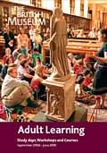
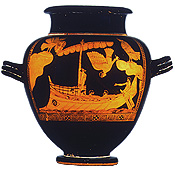

|
|
NewsAdult Learning
Whether you have a few hours to spare, or you want an opportunity for more extended study, this brochure will have something for you. With a vast range of courses reflecting the diversity of the British Museum's collections and expertise, adults of all interests and capabilities are catered for. Adult Learning - Courses, Study Days and Workshops (pdf format 400kb) |
Summer School 2003 Greek Myth: Origins and Influences 30 June - 4 July For the first time, The British Museum will offer a Summer School for adults in 2003. With unrivalled collections, educational facilities, specialist curatorial and education staff, The British Museum Summer School promises a unique and stimulating learning experience. This event will be part of the Museum's 250th anniversary celebration. The five-day Summer School begins by exploring Greek myth's interconnections with Egypt, the Levant and Anatolia. The programme explores the development of Greek myth through epic poets such as Homer and Hesiod and through the iconography of artefacts. We will examine the functions myth served and myth's recurring themes as portrayed by Greek dramatists. The final day will investigate how and why Greek mythology has had such a broad and influential afterlife in literature and the visual arts.The Summer School staff will include specialists from the Curatorial and Education Departments of The British Museum, as well as eminent guest lecturers. The small group seminars and activities will be led by experts. The daily schedule is designed to maximise interaction among staff and participants. In addition to lectures and presentations, there will be opportunities to explore issues in smaller discussion groups and elaborate on major themes through behind-the-scenes and hands-on activities. The goal is to make The British Museum Summer School a unique and enriching adult learning experience. 
Odysseus and the Sirens 5th century BC
Typical daily schedule In addition to the daytime programme, there will be a keynote address on Tuesday evening and an evening reception on Thursday. The Summer School is intended for all those with an interest in Greek civilization and the classical tradition. Be prepared for an intensive and stimulating week.Cost: £300 / £270 BM Friends and concessions. The keynote address and evening reception are included in the cost; lunch and accommodation are not. A list of restaurants and hotels will be sent out.The Summer School is organized by The British Museum Education Department. This summer school is now fully booked but if you would like to go on the cancellation list please contact the Education Department:Telephone 020 7323 8511/8854 Facsimile 020 7323 8855 email learning@thebritishmuseum.ac.uk Information on disability access is available on request. Please contact us to discuss this or any other special requirements.
|
Black-figured neck-amphora, signed by the potter Andokides; attributed to the painter Psiax, from Vulci in Etruria.
Greek, about 530-520 BC |
|||
|
home |
visit |
what's on |
join |
shop |
learning |
COMPASS |
world cultures |
sitemap |
contact us |
copyright
© The British Museum, 2002 |
|||||